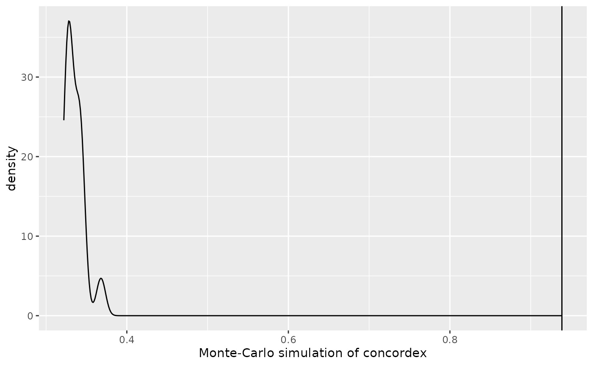
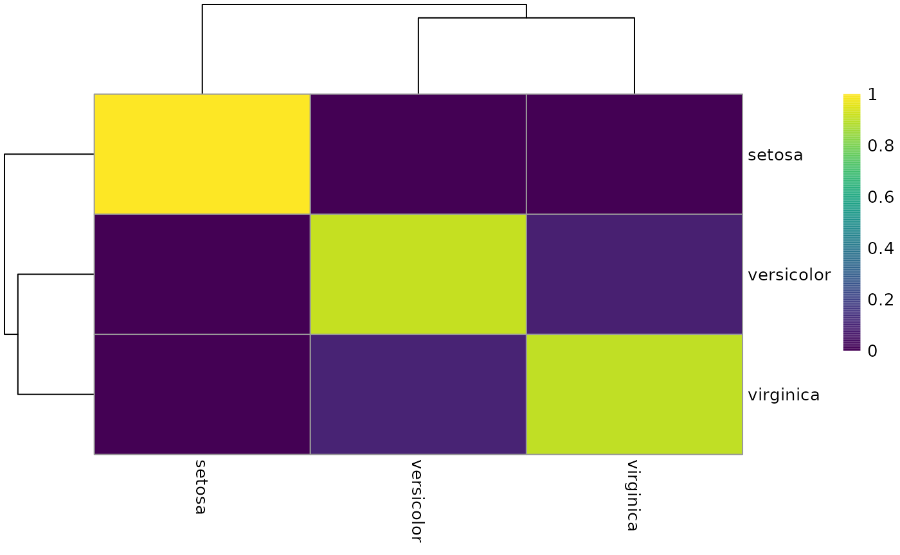

Overview of concordexR
Lambda Moses, Kayla Jackson
Mar 31, 2023
Source:vignettes/overview.Rmd
overview.RmdThe goal of concordexR is to replace UMAP as a clustering diagnostic.
Installation
You can install the development version of concordexR from GitHub with:
# install.packages("devtools")
# devtools::install_github("kayla-jackson/concordexR")Example of main functionality
This is a basic example which shows you how to solve a common problem:
library(concordexR)
library(BiocNeighbors)
g <- findKNN(iris[, seq_len(4)], k = 10)
#> Warning in (function (to_check, X, clust_centers, clust_info, dtype, nn, :
#> detected tied distances to neighbors, see ?'BiocNeighbors-ties'
res <- calculateConcordex(g$index, labels = iris$Species, k = 10, return.map = TRUE)
plotConcordexSim(res)
heatConcordex(res)
SessionInfo
sessionInfo()
#> R version 4.2.3 (2023-03-15)
#> Platform: x86_64-pc-linux-gnu (64-bit)
#> Running under: Ubuntu 22.04.2 LTS
#>
#> Matrix products: default
#> BLAS: /usr/lib/x86_64-linux-gnu/openblas-pthread/libblas.so.3
#> LAPACK: /usr/lib/x86_64-linux-gnu/openblas-pthread/libopenblasp-r0.3.20.so
#>
#> locale:
#> [1] LC_CTYPE=C.UTF-8 LC_NUMERIC=C LC_TIME=C.UTF-8
#> [4] LC_COLLATE=C.UTF-8 LC_MONETARY=C.UTF-8 LC_MESSAGES=C.UTF-8
#> [7] LC_PAPER=C.UTF-8 LC_NAME=C LC_ADDRESS=C
#> [10] LC_TELEPHONE=C LC_MEASUREMENT=C.UTF-8 LC_IDENTIFICATION=C
#>
#> attached base packages:
#> [1] stats graphics grDevices utils datasets methods base
#>
#> other attached packages:
#> [1] BiocNeighbors_1.16.0 concordexR_0.99.0 BiocStyle_2.26.0
#>
#> loaded via a namespace (and not attached):
#> [1] Rcpp_1.0.10 lattice_0.20-45 rprojroot_2.0.3
#> [4] digest_0.6.31 utf8_1.2.3 R6_2.5.1
#> [7] stats4_4.2.3 evaluate_0.20 highr_0.10
#> [10] ggplot2_3.4.1 pillar_1.9.0 rlang_1.1.0
#> [13] jquerylib_0.1.4 S4Vectors_0.36.2 Matrix_1.5-3
#> [16] rmarkdown_2.21 pkgdown_2.0.7 textshaping_0.3.6
#> [19] desc_1.4.2 labeling_0.4.2 BiocParallel_1.32.6
#> [22] stringr_1.5.0 pheatmap_1.0.12 munsell_0.5.0
#> [25] DelayedArray_0.24.0 compiler_4.2.3 xfun_0.38
#> [28] pkgconfig_2.0.3 systemfonts_1.0.4 BiocGenerics_0.44.0
#> [31] htmltools_0.5.5 tidyselect_1.2.0 tibble_3.2.1
#> [34] bookdown_0.33 IRanges_2.32.0 codetools_0.2-19
#> [37] matrixStats_0.63.0 viridisLite_0.4.1 fansi_1.0.4
#> [40] dplyr_1.1.1 withr_2.5.0 grid_4.2.3
#> [43] jsonlite_1.8.4 gtable_0.3.3 lifecycle_1.0.3
#> [46] magrittr_2.0.3 scales_1.2.1 cli_3.6.1
#> [49] stringi_1.7.12 cachem_1.0.7 farver_2.1.1
#> [52] fs_1.6.1 bslib_0.4.2 ragg_1.2.5
#> [55] vctrs_0.6.1 generics_0.1.3 RColorBrewer_1.1-3
#> [58] tools_4.2.3 glue_1.6.2 purrr_1.0.1
#> [61] MatrixGenerics_1.10.0 parallel_4.2.3 fastmap_1.1.1
#> [64] yaml_2.3.7 colorspace_2.1-0 BiocManager_1.30.20
#> [67] memoise_2.0.1 knitr_1.42 sass_0.4.5